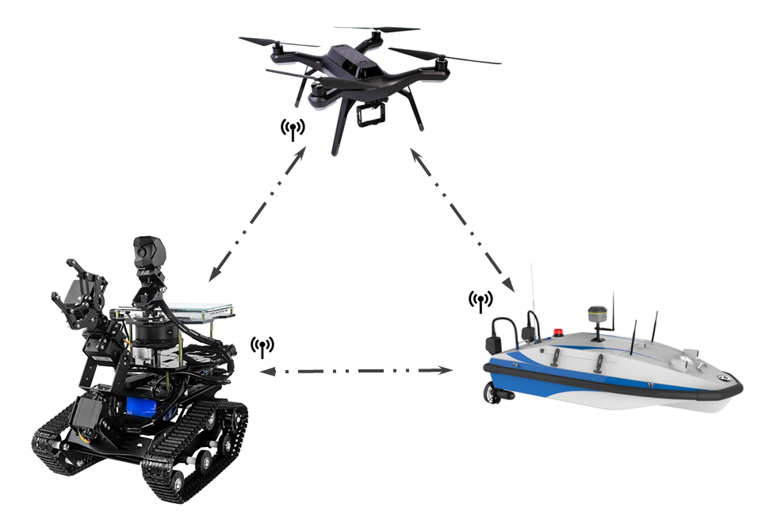

Autonomous Systems and Control Laboratory (ASCL)
|  | The Autonomous Systems and Control Laboratory (ASCL) in the Mechanical Engineering Department of The City College of New York develops methodologies for the analysis, design, and control of autonomous systems, with a particular emphasis on autonomous vehicles and robotic networks. Our fundamental and applied research on autonomous systems and controls aims to enable greater autonomy for explorations of land, sea, and sky. The lab focus is on a wide range of research efforts which include
The lab director is Dr. Bo Wang, Assistant Professor of Mechanical Engineering. Current projects deal with theoretical and experimental investigation of networked underactuated multi-vehicle systems and source seeking control design. |
Research
Source Seeking for Planar Underactuated Vehicles Autonomous vehicles that operate without GPS or INS benefit from source seeking capabilities. In this work, we develop novel source seeking strategies for generic force/torque-controlled planar underactuated vehicles. We provide a theoretical foundation for underactuated extremum seeking algorithms based on symmetric product approximations, averaging, passivity, and partial-state stability theory. The source seeking controller does not require any position or velocity measurements but only real-time measurements of the source signal at the current position. The semi-globally practically asymptotically stable is proven for the closed-loop source seeking systems. Potential application scenarios include distance-based localization, avalanche victim search, chemical/gas leakage location, etc. Selected Publications:
|
 |
Formation Stabilization and Tracking Control of Planar Underactuated Vehicles The advantages of multi-vehicle systems over single vehicles include higher efficiency, robustness, and flexibility. This research is devoted to developing distributed control approaches that are applicable to heterogeneous underactuated multi-vehicle systems. We presente a distributed control framework to simultaneously address the formation stabilization and tracking control problem for heterogeneous planar underactuated vehicle networks without global position measurements. Potential applications include reconnaissance, mine clearance, and search and rescue missions. Selected Publications:
|
Collaborators
Location
Autonomous Systems and Control Laboratory The City College of New York Department of Mechanical Engineering Marshak Science Building, Room 705 160 Convent Avenue, New York, NY 10031 |
Contact
Laboratory director
Dr. Bo Wang, Assistant Professor of Mechanical Engineering
Email: bwang1@ccny.cuny.edu
Phone: +1 (212) 650-5204